User guide
Truckaligner
II
JOSAM
T105- 1 1210
Содержание
Шаги, использующие систему для системы в первый раз
Короткие шаги для выполнения измерения
Измерительная головка JT611 / JT631 / JT691
Технические данные и информация 6
Предварительные проверки измерений 9
Регулировка самоцентрирующихся датчиков 10
Main [truckaligner 180 & truckaligner 2]..............................................................13
Runout [truckaligner 180 & truckaligner 2]..........................................................17
Non-steering axle [truckaligner 2].......................................................................21
Adjust toe and camber [truckaligner 2]................................................................25
Steering axle menu [truckaligner 2].....................................................................29
Measuring steps for all angles....................................................................29
Caster, KPI, TOOT and max. turn [truckaligner 2]..............................................35
Measuring steps for all angles....................................................................35
Max. turn (toe) [truckaligner 2]............................................................................39
Max. turn (camber) [truckaligner 2].....................................................................43
Steering box position, toe and camber [truckaligner 2].......................................47
Twinsteer axles [truckaligner 2]...........................................................................51
Measuring steps for twinsteer measurement..............................................51
Turn outwards to the left -100 mm/m...........................................................52
Turn outwards to the right 100 mm/m..........................................................53
Adjust steering axle menu [i-track & truckaligner 180 & truckaligner 2]..............55
Adjust toe and camber [truckaligner 2]................................................................57
Adjust twinsteer axles [truckaligner 2].................................................................61
Adjust max. turn (toe) [truckaligner 180 & truckaligner 2]...................................65
Adjust max. turn (camber) [i-track & truckaligner 180 & truckaligner 2]..............67
Scale set alignment [truckaligner 180 & truckaligner 2]......................................71
Vehicle alignment [truckaligner 180 & truckaligner 2].........................................73
Calibration [i-track & truckaligner 180 & truckaligner 2]......................................75
Measuring unit compare [i-track & truckaligner 180 & truckaligner 2].................77
Steps during the compare sequence:..........................................................77
Toe calibration [i-track & truckaligner 180 & truckaligner 2]................................79
Measuring head in normal position..............................................................79
Measuring head in upside down position.....................................................79
Camber calibration [i-track & truckaligner 180 & truckaligner 2].........................83
Steps during the camber calibration sequence:...........................................83
Measuring head in normal position..............................................................83
Measuring head in inside out position..........................................................83
Electronic level calibration [truckaligner 2]..........................................................87
Steps during the electronic level calibration sequence................................87
Conditions - electronic level first position.....................................................87
Measuring - electronic level first position.....................................................87
Conditions - electronic level in opposite direction........................................87
Measuring - electronic level in opposite direction........................................88
Diagnose [i-track & truckaligner 180 & truckaligner 2]........................................91
These operating instructions describe the handling, function and components for JOSAM truckaligner 180/II.
Note! Check the calibration of your measuring heads regularly using measuring head compare.
■ Note! Check the rest of the equipment regularly for damages and play that can affect the measurements accuracy.
JOSAM truckaligner 180/II, together with JOSAM Homebase installed on a PC, is a measuring equipment designed for wheel alignment.
JOSAM truckaligner 180/II consists of JOSAM Homebase software, two measuring heads, four scales and other equipment that are used to assemble the system on the vehicle. The measuring heads are battery powered and will last for a normal working day.
JOSAM truckaligner 180/II uses advanced laser technology and therefore gives accurate and repeatable measurements.
JOSAM truckaligner 180/II also uses Bluetooth® radio communication between the PC and the measuring heads.
JOSAM truckaligner 180/II is portable and can perform its measurements on the vehicle without the need of any support of power or special locations. The measuring results are saved on the hard disc of the PC and can be printed out when the PC is connected to a printer.
■ Note! For truckaligner and i-track plugin make sure to switch off power saving alternatives since it can block the USB port used for the bluetooth connection.
■ Note! Make sure the PC uses the correct bluetooth module and drivers to ensure the bluetooth communication.

1 Note! Make sure that the bluetooth module can communicate freely, do not place it inside a cabinet, always outside.
Start by switching on the two measuring heads. Then to connect the measuring
 |
|
JOSAM Homebase... |
and then enter the setup
heads access JOSAM truckaligner 180/11
In the setup you will find the radio settings (Bluetooth) where you can search, choose and connect the measuring heads.
Note: some times you may have to search more than once to find the measuring heads.

1. At first perform the "Measurement preparations” before continuing with any measurement.
2. Select "Quick start" in JOSAM Homebase to start a measurement without any additional information or create a work order in JOSAM Homebase with all options you want. See the JOSAM Homebase manual for further information.
3. Fit all equipment to the vehicle.
 |
of the wheels of the |
[Only on truckaligner If] perform a runout axles that you want to measure.
4.
|
non-steered |
 |
 |
or |
Select if you want to measure a steered axle.
5.
6. Follow the steps in the screen to do the complete measurement before adjustment.
7. Adjust the wheel- and axle alignment using JOSAM truckaligner 180/II measuring continuously

|
8. |
 |
Perform a measurement after adjustment.
A ON/OFF
B Protection cover
C Receiver
D Measuring button
E Locking device
F Locking screw
G Locking screw for
stabilizer
H
I Charger connector Electronic level
J connector (only JT611/JT631)
K Stabilizer
L Measuring button
M Display (only JT611/JT631)
N Bluetooth
O Outer bubble (only
JT611/JT631)
Inner bubble (only
JT611/JT631)
The measuring head is powered on with the ON/OFF button A and should be kept switched on. The measuring head should be connected to a charger at H, when not in use.
At the bottom of measuring head there is a protection cover B. Before any measuring can be performed the cover needs to be released. When the cover is released the laser will reach the scales that will reflect the laser beam to the receivers C on both sides of the measuring head.
If an electronic level, JT604/JT616, is used it should be attached to the connector I at the bottom of the stabilizer J, before the measurements are performed. The electronic level can be attached to any one of the two measuring heads that are used.
On the top of the measuring heads JT611/JT631 there is a display L that will indicate the status of the measurement and it will also display measured values. On all measuring heads there are three LEDs, green, yellow, green. When the measuring head is switched on all three LEDs are lightning up and after a short while they will be turned off, indicating that the measuring head is ready to connect. (See further LED indications below.)
The stabilizer J on the head acts as a moderating device to reduce oscillation when the wheel is turned, and is looked to the wheel adapter axle with the locking screw G.
A button K on the stabilizer is used when for measuring toe and camber.
There are two bubbles installed on the measuring head JT611/JT631 to ensure that it is horizontal. The inner bubble O indicates the horizontal position of the head itself and the outer bubble N indicates camber. At the bottom of the head there is a third bubble that is used when calibrating toe.
A locking device E ensures that the head is secured to the shaft of the wheel adapter if necessary.
Starting up: All LEDs are on, and are turned
off after 5-10 seconds.
If the yellow LED does not turn off after 5-10 seconds there is a problem with the communication system.
Yellow LED turned on The laser motor is on and rotating
normally.
Both green LED's flash Indicate that at least 1 valid scale individual has been found on the same side
as the LED.
Only 1 green LED The measuring head has only
flashes detected at least 1 valid scale on
the same side as the flashing LED.
Green LED's never turned on
The measuring head cannot see any scale at all.
Check the laser cover and the height of the scales.
Both green LED's turn Simultaneously when no external on electronic level is connected.
First the left green LED, followed a moment later by the right green LED when an external electronic level is connected.
The measuring heads are supplied with Li-Ion batteries. When the control unit is not in use it shall be kept with a charger connected to H.
1 Note: Li-lon batteries are not environmentally friendly and should be disposed of according to local regulations.
Note: Charging only allowed in office environment.
If there are any problems there are a few alternatives that can be used to diagnose the system, depending on the type of problem.
|
to check the |
Under the setup menu
you can use diagnose
system and to calibrate the measure heads go to
If the yellow light does not function or the green light flashes more slowly than normal, then the measuring head is not functioning, as it should.
One reason for this can be because the mirror has become dirty and needs to be cleaned. The mirror is located at the bottom of the measuring head, inside the circular protective cover.
Remove the protective cover (4 screws)and then clean the protective glass in front of the mirror.
A,
* Note: Use water and soap, not any chemical cleaning material. After cleaning the measuring head has to be checked and if needed, calibrated.
|
|s |
JDSAM truckalignar II |
||
|
Prod No JTEQ2 |
Vsraon A |
||
|
Serial No 10023 |
ce |
||
|
30* 419 * 5E-701 40 - ORESRQ EWflPr’. prions +46 19 30 40 Q0 * FflC +46 15 3£ 03 16 |
|||
|
r |
A |
||||
|
/▼a v,_ |
CAUTION-CLASS2 LASER RADIATION WHEN OPEN DO NOT STARE INTO TOE BEAM |
EN-60825-1:2007 WAVELENGTH: 670 nm PULSE DURATION; 136 JJS |
MAX OUTPUT ENERGT: <190 nJ FRE0UENCY; 77 Hz |
||
Every measuring head is marked with a serial number, year of manufacture and a CE symbol that certifies that
the product is
Li-Ion
Light sensitivity: Laser:
Operating time: Charging time: Caster range: Camber range: KPI range:
Max turn range: Distance to scale Toe accuracy: Camber accuracy:
approved
according to
LVD and EMC
directives,
EN50081-2,
EN50082-2.
There is also a mark that tells that the batteries are not
environmentally
friendly.
100.000 LUX
Class 2
8 hours
7 hours
+/- 20 degrees
-5 degrees -+10 degrees
+/- 20 degrees
60 degrees
0-15 m
0,25 mm/m
+/- 3 minutes
Updated 2012-09-04
Before carrying out any measurements make sure that the vehicle has no excess play in the bushings and steering linkage, by using JOSAM play detectors AM800 K/AM900 K.
The following things should be checked before wheel and axle measurements are taken:
Tires (are the correct tires mounted or are different types of tires mounted on the same axle?).
Unnecessary play in kingpins, steering gear, and the balancing arms support on support axle vehicles.
3. The attachment of the axles (Play in spring-eye bolts, shackles, broken centre rivets, broken springs and loose spring straps.)
4. Worn torsion bar bushings
Note: If any of the above mentioned points are not correct, these should be fixed before proceeding with the measurements.
|
Connection |
| 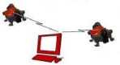 |
Place the wheel clamps, JT636/JT637, on the wheel set and the measuring heads on the axle.
Assemble the self-centering measuring gauges, JT120, gauge extensions, JT122-123, and the scales, JT399-401 / JT614-615 / JT626-627 in the front and at the rear of the vehicle.
|
Scales and gauges |
If the vehicle is a trailer or semi-trailer, use the special clamp JT290 for tow eyelet or kingpin.
If the measuring procedure takes place in a windy or draughty environment, this may cause the target scales to sway or vibrate. Therefore, to prevent this the stabilizer bracket JT119 is attached to the hangers and secured to the chassis frame.
|
Adjustment of self centering gauges |
| 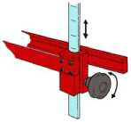 |
Adjust until the extensions are horizontal by means of the adjusting device on the self-centering gauges, JT120. Check the spirit level on gauge extension.
Position the target scale and the measuring head so that they face each other center to center. There are numerical markings on the extensions, note the reading indicated on the inner edge of the target scale that should be the same for all scales when mounted.
Adjust the height of the target scale so that its center is at the same level as the lower edge of the measuring head.
Position other target scales at the same height and reading as the first target scale.
Measurement preparations are now completed and the system is ready to start measuring.
A Do not alter the position of the self centering measuring gauges, while measuring procedure is in progress.
(The accuracy of the system depends on the position of the axle in relation to the target scales).
Updated 2012-03-23
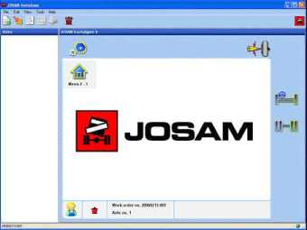The main menu is the "heart” of the Truckaligner software. All main functions like measuring, printing and setup can be accessed directly from this menu.
The main menu is connected to a working order number (displayed at the bottom of the screen) which is automatically generated or chosen by the user.
To measure all axles of a vehicle you just have to move the measure heads and measure one axle after the other in the order you prefer. The program automatically detect when the measuring heads are moved and saves the result separately for each axle in turn from the front scales.
Down right in the screen you can see a thumbnail strip that tells you the previous, current and next step in the procedure.
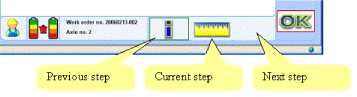To start measuring a new axle which has not been measured earlier,
press
l£-t
for a steering axle, or
for a non-steering axle.
perform a runout
to calibrate the wheel adapters. Runout can be
accessed from all menus where Runout needs to be performed.
The program automatically detect when the measuring heads are moved and then save the result separately for each axle in turn from the front scales. In case of measuring multiple non-steering axles, also the parallelism is shown in the upper right corner, as difference between highest and lowest out of square. Values within parentheses indicate measured values before adjustment.
When measuring a new axle, the values are saved as ’Before adjustment’ values, these values are shown within parentheses. To adjust or perform an “After adjustment” measurement on an axle that has been measured, select by
stepping with
or
(or choose the axle in the menu to the left)
and press ^ = = . Current axle number is displayed at the bottom of the screen.
Adjust mode can also be accessed by pressing
Setup
Setup button displays the Setup Menu.
After adjustment Switch to after adjustment mode Before adjustment Switch to before adjustment mode Adjust menu
Adjust button enters the adjust axle menu.
This icon is only displayed when the axle has been measured "Before adjustment”.
Perform a runout
180 1 3. Main
The vehicle alignment menu is used to align articulated vehicles that are needed to get correct measuring result for the rear axle. Visible when the option articulated vehicles is chosen
Parallel adjustment of the scales to the center line of the vehicle (trailer and semi trailer) before measuring is started. Visible only when trailer or semi trailer is chosen in the setup
Measures the parallelism of 2 steering axles. The angles are measured by using the toe values.
This Icon is only displayed when there are two steering axles after each other.
Start measuring a new steering axle
Start measuring a new non-steering axle
Up and down
The up and down button are used to scroll through the measured axles which are displayed in the window.
These icons are only visible when more then one axle is measured.
Enters measuring mode for the axle displayed. OK icon is only visible when an axle has been measured.
Updated 2012-03-23
Runout [truckaligner 180 & truckaligner 2]
Perform a runout to calibrate the wheel adapters. You can perform runout in two different ways.
1. Let Truckaligner guide you through the procedure using control unit.
Truckaligner II allows you to perform runout on all wheels on a vehicle.
2. Do it your self with the measuring head.
Do the complete sequence with one measuring head. This is useful when more than one operator at the same time performs runout.
Select method in setup
or in the setup of Homebase.
A Axle jacked up.
B Mount the measuring heads on the wheel adapters.
When ready press
to start runout procedure.
Turn the wheel so that the wheel clamp arm points straight forward (white knob in the picture).
Press measuring button ® on the measuring head.
|
on the |
Turn the wheel 180 degrees so that the wheel clamp arm points straight in the opposite direction (white knob in the picture).
Press measuring button measuring head.
Adjust horizontal white wheel clamp knob until reading is within 0,2 mm/m. Press button again.
Turn the wheel 90 degrees so that the opposite wheel clamp arm points straight forward (black knob in the picture).
Press measuring button ® on the measuring head.
|
on the |
Turn the wheel 180 degrees so that the opposite wheel clamp arm points straight in the opposite direction (black knob in the picture).
Press measuring button measuring head.
Adjust horizontal the black wheel clamp knob until reading is within 0,2 mm/m.
Press button again.
180 5 2. Runout
| 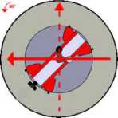 |
|
Press |
To check the Runout compensation finally turn the wheel 90 degrees so that the opposite wheel clamp arm points straight backwards (white knob in the picture).
Press measuring button ~ on the measuring head.
If the value exceeds 0,02 repeat Runout procedure. Otherwise Runout is complete.
when ready.
Main button brings you to the main menu.
Stop measuring
Stop button interrupts the procedure and brings you back to the beginning of the runout sequence.
OK button brings you back to the previous menu when you have performed a runout.
Updated 2012-03-23
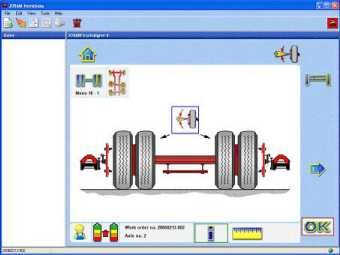The non-steering axle menu is used to measure wheel angles camber and toe on a non-steering axle.
To measure all axles at a vehicle you just have to move the measure heads and measure one axle after the other in the order you prefer. The program automatically detect when the measuring heads are moved and then save the result separately for each axle in turn from the front scales.
Down right in the screen you can see a thumbnail strip that tells you the previous, current and next step in the procedure.
|
Previous step Current step Next step |
The measurement is done in the two steps that are described below.
A. Perform the runout procedure.
B. Non-steering axle standing on the floor NOT jacked up.
C. Horizontal standing or electronic level mounted.
D. Mount the measuring heads on the wheel adapters.
When ready press

|
Measuring |
| 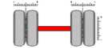 |
Performs a measurement.
The program will continue automatically after performed measurement.

Main button will end the measurement and return to main menu.
Switch to after adjustment mode
Before adjustment
Switch to before adjustment mode
Interrupts the current step. Visible only when measurements are performed.
A stopped measurement can be re-established with the OK-button, or terminated by using the main-button.
The measurement can be restarted from earlier or later steps by using the left- or right-button.
Steered rear axle
Change a non-steered rear axle in a steered rear tag axle.

The left- and right-buttons are used to scroll through the different steps. The measurement can be started/reestablished at each step by pressing OK.
The OK is used to step through the stages displayed in the results window.
If an error occurs during a step, an error dialog is displayed. Pressing the OK removes the error dialog.
Updated 2012-03-23
In this mode you can see the results when adjusting camber and/or toe immediately on the screen. First check if all conditions are fulfilled, then continue measuring. If you want you can skip the first step (measuring camber) by pressing the arrow button to the right and then press OK.
When you have finished adjusting, Truckaligner will automatically continue to measurement after adjustment. Tighten all bolts/nuts and press OK to perform this measurement. The result will be shown on the screen.
A. The runout procedure performed.
B. Steering axle on non-friction plates or turntables.
C. Horizontal standing, l evel mounted.
D. Measuring heads mounted on the wheel adapters.
When ready
to continue.
press
|
Camber |
| 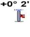 |
|
+0° 2' |
The results for left and right side camber angles are shown continuously while adjusting.
If electronic level is used you will also get this symbol and value for the level.
|
to continue. |
|
|
When ready press |
|
The values for left and right toe are shown continuously while adjusting.
At the same time you will also get the total toe value.
+0.0
+0.0 +0.0
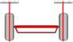When ready press
to continue.
| 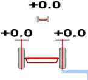 |
|
OjK When ready press to continue. |
The values for left and right Toe are shown continuously while adjusting.
At the same time you will also get the Total Toe value.
Adjust the steering wheel to straight forward ±2mm/m.
Wait until the program continues or press
when ready.
When result window appears the results are saved.
| 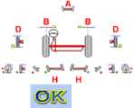 |
D. Camber |
|
Press |
|
A. Total toe
B. Toe
H. Toe out on turns (TOOT)
to get back to the previous menu.
Main button will end the measurement and return to main
menu.

TA2_2_2. Adjust Toe And Camber
Performs a runout
Interrupts the current step. Visible only when measurements are performed.
A stopped measurement can be re-established with the OK-button, or terminated by using the main-button.
The measurement can be restarted from earlier or later steps by using the left- or right-button.
The left- and right-buttons are used to scroll through the different steps. The measurement can be started/reestablished at each step by pressing OK.
The OK is used to step through the stages displayed in the Results Window.
If an error occurs during a step, an error dialog is displayed. Pressing the OK removes the error dialog.
Updated 2012-03-23
Steering axle menu [truckaligner 2]
The Steering axle menu is used to measure all wheel angles on a steering axle.
Start by pressing the button with the symbols LDOA indicating the angles you want to measure.
|
G |
o

: Steering box : Toe and camber
Caster, KPI, TOOT Max. turn
To measure all axles at a vehicle you have to move the measure heads and then measure one axle after the other in the order you prefer. The program automatically detect when the measuring heads are moved and then save the result separately for each axle in turn from the front scales.
Note: When the process is clearly defined, the program continues in the process when 3 identical values have been received. This means a slight delay
|
to |
in the process. The operator can override this delay by pressing continue before the intended value is reached.
|
caster, KPI, |
1.
2.
3.
4.
Press 1 1 .
Check if all conditions 1 ' are fulfilled.
Press
Put the steered wheel in straight forward position
6. Turn 20° to the left or until the figures turn green
7. Press
or wait until Truckaligner continues by itself.
8. Turn 20° to the right or until the figures turn green
9. Press
or wait until Truckaligner continues by itself.
10. Turn to the right maximum turn .
11. Press
©K'
or turn left when the dots are green.
12. Turn to the left maximum turn

13. Press
or turn left when the dots are green.
14. Put the steered wheel in a straight forward position.
13. Check if all conditions
are fulfilled.
14. Choose for measuring steering box centering
or press
to continue measuring toe and camber. a. In case of measuring steering box centering, put the steering box
me
on marks and press the
button to store the values.
Continue with measuring toe and camber
+ 1.0
15. Put the steered wheel in straight forward position the program will skip this.
P=
if needed, or else
©ee
TA2_3_1. Steering Axle
A. Perform the runout procedure.
B. Steering axle jacked up.
C. Horizontal standing, l evel mounted.
D. Mount the measuring heads on the wheel adapters.
When ready press
The measured toe value for the steering wheel side is displayed in green or red depending on if the value is inside or outside the limit of +/- 2 mm/m.
The process continues automatically. If you don't want to wait for
QiK'
the process to finish, press to move forward to next action.
Turn the wheels 20 degrees left or until the figures turn green.
Turn the wheels 20 degrees right or until the figures turns green.
Turn the wheels fully to the right.
When ready press or
continue by turning the wheels left.
Turn the wheels fully to the left.
OjK
When ready press ^^ or continue by turning the wheels right
Before continuing put the steered wheel in a straight forward position.
A. Perform the runout procedure (if not done).
B. Steering axle jacked up.
C. Horizontal standing, l evel mounted.
D. Mount the measuring heads on the wheel adapters.
E. Turn the wheels straight forward.
When ready press
to continue with toe and camber
to include steering box measurement in the
or press process.
| 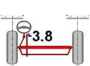 |
Press |
Wait for steering box result to be shown.
when ready.
If the wheel is not straight whit in the value of ±2mm/m this part will appear and you need to adjust the steered wheel to straight forward ±2mm/m.
Wait until the program continues or
when ready.
press
©k:
TA2_3_1. Steering Axle
A. Total toe
B. Toe
C. Steering box
D. Camber.
E. Caster
F. KPI
G. Max. turn
H. Toe Out on Turns (TOOT)
I. Twinsteer

Main button will end the measurement and return to Main menu
The before/after icon sets the measuring mode, which is displayed in the Mode Icon.
Before mode displays all measurement results before adjustment
After mode displays all measurement results after adjustment.
Adjust menu button brings the adjust steering axle menu up.
This icon is only displayed when the axle has been measured before.
Performs a runout
|
Twinsteer axles menu |
Measures the parallelism of 2 steering axles. The angles are measured by using the toe values.
This Icon is only displayed when there are two steering axles after each other.
|
Max. turn (toe) |
Measure max. turn with toe. Only available if you have chosen toe in the setup for max. turn measurement.
Measure max. turn with camber in separate flow.
Only available if you chosen camber in the setup for max. turn measurement.
Measure caster, KPI, TOOT and max. turn, all in one sequence.
*i 9 T Toe and camber
hfc F
Measure steering box position, toe and camber, all in one sequence.

Choosing the measure all angles button starts a sequence measuring all angles.
Returns to main menu.
Updated 2012-03-23
This mode is used to measure the turn angles on a steering axle. Measuring Max turn angles uses the camber values by default.
Note: The program continues in the process when 3 identical values have been received, this means a slight delay in the process. The operator can
0;K"
override this delay by pressing , to continue.
Note: Brake the wheels of the axle to be measured.
i n
1. Press
3. Press
|
2. Check if all conditions |
are fulfilled. |
4. Put the steered wheel in straight forward position .
5. Press
or wait until Truckaligner continues by itself.
6. Turn 20° to the left or until the figures turn green
7. Press
or wait until Truckaligner continues by itself.
8. Turn 20° to the right or until the figures turn green
9. Press
or wait until Truckaligner continues by itself.
10. Turn to the right maximum turn ^ .
11. Press
or turn left when the dots are green.
■■V-l;
12. Turn to the left maximum turn ^ .
A. Brake the wheels
B. Steering axle jacked up.
C. Steering axle in level.
D. Mount the measuring heads on the wheel adapters.
|
Wheels straight forward |
The measured toe value for the steering wheel side is displayed in green or red depending on if the value is inside or outside the limit of +/- 2 mm/m.
|
20 degrees left turn |
Turn the wheels 20 degrees left or until the figures turn green.
|
20 degrees right turn |
| 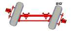 |
Turn the wheels 20 degrees right or until the figures turns green.
|
Wheels max right |
Turn the wheels fully to the right.
The program automatically continues to the next sub-step after a stable reading.
The presented value shows the current max. wheel turn.
A Turn the wheel max. to the left if you accept the shown value. When the system detects that you are turning to the left it will automatically jump to the next step.
B If you have not turned max. to the right, you can continue to do so. A new higher reading is accepted as the new max. turn value.
Turn the wheels fully to the left.
The program automatically continues to the next sub-step after a stable reading.
The presented value shows the current max. wheel turn.
A Turn the wheels straight forward if you accept the shown value. When the system detects that you are turning to the right it will automatically jump to the next step.
B If you have not turned max. to the left, you can continue to do so. A new higher reading is accepted as the new max. turn value.
E. Caster
F. KPI
G. Max. turn
H. Toe out on turns (TOOT)
Steering axle menu
Back to the steering axle menu.
Interrupts the current step. Visible only when measurements

are being performed.
The measurement can be re-established with the OK-button, or terminated by using the main-button.
Stepping back using the left-button restarts the measurements.
The left- and right-buttons are used to scroll through the different steps. The measurement can be started/reestablished at each step by pressing OK..
The OK is used to step through the stages displayed in the Results Window.
If an error occurs during a step, an error dialog is displayed. Pressing the OK removes the error dialog.
When an error dialog is displayed, the execution of the current step is repeated.
Pressing the OK button in the last step will bring you back to steering axle menu.
Updated 2012-03-23
This operation demands that extension axle JT160 for wheel adapter is used.
Be sure that the measure head is level from both the front and the side.
Note: When the process is clearly defined, the program continues in the process when 3 identical values have been received. This means a slight delay
QKy
in the process. The operator can override this delay by pressing ^—-N-' , to continue before the intended value is reached.
Measuring steps:
T
1. Press *
|
2. Check if all conditions |
are fulfilled. |
3. Press
4. Put the steered wheel in straight forward position .
©i£
5. Press s—or wait until Truckaligner continues by itself.
6. Turn to the right maximum turn .
©i£
or wait until Truckaligner continues by itself.
7. Press
8. Turn to the left maximum turn
or wait until Truckaligner continues by itself.
9. Press
10. The results of the measurement are shown on the screen.
A. Perform the runout procedure.
B. Steering axle jacked up.
C. Horizontal standing, l evel mounted.
D. Mount the measuring heads on
the wheel adapters.
When ready press
The measured toe value for the steering wheel side is displayed in green or red depending on if the value is inside or outside the limit of +/- 2 mm/m.
The process continues automatically. If you don’t want to wait for
to move forward to next action.
OjK"
the process to finish, press ^—-N-'
|
When ready press |
Turn the wheels fully to the right.
| 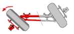 |
When ready press |
Turn the wheels fully to the left.
When result window appears the results are saved. i—i G. Max. turn
Go back to steering axle menu.


TA2_3_3. Max Turn (toe)
The left- and right-buttons are used to scroll through the different steps. The measurement can be started/reestablished at each step by pressing OK.
The OK is used to step through the stages displayed in the Results Window.
If an error occurs during a step, an error dialog is displayed. Pressing the OK removes the error dialog.
When an error dialog is displayed, the execution of the current step is repeated.
Updated 2012-03-23
Measuring steps
If caster and KPI have not been measured before, the menu for measurement of caster, KPI, TOOT and max. turn will appear.
Note: When the process is clearly defined, the program continues in the process when 3 identical values have been received. This means a slight delay
OjK
in the process. The operator can override this delay by pressing ^—-N-‘ , to continue before the intended value is reached.
1. Press 4
|
2. Check if all conditions |
are fulfilled. |
3. Press
4. Put the steered wheel in straight forward position .
5. Press
or wait until Truckaligner continues by itself. 6. Turn to the right maximum turn .
©i£
or wait until Truckaligner continues by itself.
7. Press
-mt
8. Turn to the left maximum turn ^ .
or wait until Truckaligner continues by itself
9. Press
or wait until Truckaligner continues by itself
10. Press
11. Truckaligner will check if the wheels are in and straight forward position and if the toe values are correct.
12. The results of the measurement are shown on the screen.
When ready press
A. Perform the runout procedure.
B. Steering axle jacked up.
C. Horizontal standing, l evel mounted.
D. Mount the measuring heads on the wheel adapters.
|
Wheels max right |
| 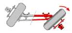 |
|
Wheels max left |
| 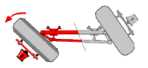 |
|
rax |
 |
Turn the wheels fully to the right.
The program automatically continues to the next sub-step after a stable reading.
The presented value shows the current max. wheel turn.
A Turn the wheel max. to the left if you accept the shown value. When the system detects that you are turning to the left it will automatically jump to the next step.
B If you have not turned max. to the right, you can continue to do so. A new higher reading is accepted as the new max. turn value.
Turn the wheels fully to the left.
The program automatically continues to the next sub-step after a stable reading.
The presented value shows the current max. wheel turn.
A Turn the wheels straight forward if you accept the shown value. When the system detects that you are turning to the right it will automatically
TA2_3_4. Max Turn (camber)
jump to the next step.
B If you have not turned max. to the left, you can continue to do so. A new higher reading is accepted as the new max. turn value.
When result window appears the results are saved.
G. Max. turn
Steering axle menu
Go back to steering axle menu.
The left- and right-buttons are used to scroll through the different steps. The measurement can be started/reestablished at each step by pressing OK.
The OK is used to step through the stages displayed in the Results Window.
If an error occurs during a step, an error dialog is displayed. Pressing the OK removes the error dialog.
When an error dialog is displayed, the execution of the current step is repeated.
Updated 2012-03-23
|
1. Check if all conditions |
are fulfilled. |
2. Choose for measuring steering box centering
or press
to continue measuring toe and camber. a. In case of measuring steering box centering, put the steering box
on marks and press the
button to store the values.
Continue with measuring toe and camber
’11
3. Put the steered wheel in straight forward position .
CNK
or wait until Truckaligner continues by itself to finish
4. Press
measurement of Toe and Camber.
A. Perform the runout procedure.
B. Horizontal standing, level mounted, use nonfriction plates.
C. Mount the measuring heads on the wheel adapters.
D. Turn the wheels straight forward.
When ready press
to continue with toe and camber
|
to include |
steering box measurement in the
or press process.
Wait for steering box result to be shown.
|
Steering box |
| 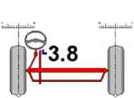 |
|
Press |
when ready.
If the wheel is not straight whit in the value of ±2mm/m this part will appear and you need to adjust the steered wheel to straight forward ±2mm/m.
Wait until the program continues or
when ready.
press
0K'
When result window appears the results are saved.
B. Toe
|
B B |
|
'M JB > *V-* M, < 3L SSr |
C. Steering box
D. Camber
Steering axle menu
Choose measuring mode in the steering axle menu.
Performs a runout
Interrupts the current step. Visible only when measurements are performed.
The measurement can be re-established with the OK-button, or terminated by using the main-button.
The measurement can be restarted by stepping back using the left-button.

TA2_3_5. Steering Box Position, Toe And Camber
To measure steering box position.
The left- and right-buttons are used to scroll through the different steps. The measurement can be started/reestablished at each step by pressing OK..
The OK is used to step through the stages displayed in the Results Window.
If an error occurs during a step, an error dialog is displayed. Pressing the OK removes the error dialog.
Pressing OK in the last step brings you back to steering wheel menu.
Updated 2012-03-23
The twinsteer axle menu is used to measure the parallelism and play of two steering axles. The measurements are made by using toe values.
1. The wheels are standing on the floor using four non-friction plates
(AM268). Mount a measuring head on the left wheel on the first axle, and another one on the right wheel of the second axle.
|
Press |
|
Check if all conditions |
are fulfilled. |
2.
3.
4.
5.
Press
Turn the wheels to the left to at least -100 mm/m or until the figures get green ' T" .
6.
7.
Wait until Truckaligner continues by itself or press
Turn to the right to at least -30 mm/m or until the figures get green
8.
9.
Wait until Truckaligner continues by itself or press
Put the wheels in straight forward position, 0 ± 5 mm/m
10. Wait until Truckaligner continues by itself or press
11 .Turn the wheels to the right to at least 100 mm/m or until the figures get green ' .
12. Wait until Truckaligner continues by itself or press
13. Put the wheels
14. The results will
Steer in Adjust
in straight forward position, 0 ± 5 mm/m — . be shown on the screen. Now it is possible to adjust Twin
Mode
The wheels are standing on the floor using four non-friction plates (AM268).
Mount a measuring head on the left wheel on the first axle, and another one on the right wheel of the second axle.
|
Press |
when ready.
Turn wheels at least -100 mm/m to the left.
When you reach this angle the program will proceed with next step.
|
Note: If you press |
before you reach -100 mm/m it will greatly affect the measurement results.
Turn wheels back to -30 mm/m.
When you reach this angle the program will proceed with next step.
|
Note: If you press |
before you reach -30 mm/m it will greatly affect the measurement results.
Turn wheels back towards 0 (zero) ± 5 mm/m. When you get a stable value it turns green and the program continues with next step.
Note: Do not turn the steering wheel to the left or back and forth this will affect the measurement results.
Turn the wheels straight
Turn wheels at least 100 mm/m to the right.
When you reach this angle the program will proceed with next step.
|
Note: If you press |
before you reach 100 mm/m it will greatly affect the measurement results.
Turn wheels back towards 0 (zero) ± 5 mm/m. When you get a stable value it turns green and the program continues with next step.
Note: Do not turn the steering wheel to the right or back and forth this will affect the measurement results.
When result window appears the results are saved.
A. Play in the steering linkage
B. Twinsteer parallelism
|
Press |
 |
to get back to steering axle menu.
Return to the steering axle menu.
Adjust menu button brings the adjust twinsteer axle menu up.
This icon is only displayed when the axle has been measured before.
Perform runout
Interrupts the current step. Visible only when measurements are performed.
The measurement can be re-established with the OK-button, or terminated by using the main-button.
The measurement can be restarted by stepping back using the left-button.
The left- and right-buttons are used to scroll through the different steps. The measurement can be started/reestablished at each step by pressing OK.
The OK is used to step through the stages displayed in the results window.
If an error occurs during a step, an error dialog is displayed. Pressing the OK.
Pressing the OK button in the last step will bring you back to steering axle menu.
Updated 2012-03-23
Adjust steering axle menu [i-track & truckaligner 180 & truckaligner 2]
The adjust steering axle menu displays all adjust options on steering axles.
Start adjusting an angle by pressing a button with the symbols ALDjndicating the angles you want to adjust.
|
Result window |
A. Total toe
B. Toe
C. Steering box
D. Camber G. Max. turn
A Max. turn L Steering box □ Toe and camber
Main
Enter main menu.
Twinsteer is only displayed when two steering axles are measured

Measure max. turn with camber while adjusting. Before the adjustment can take action you have to manage caster, KPI, TOOT and max. turn measurement to get data that is needed for the adjustment.
|
Adjust toe and camber |
Measure toe and camber while adjusting.
OK button brings you back to the previous menu.
Updated 2012-03-23
In this mode you can see the results when adjusting camber and/or toe immediately on the screen. First check if all conditions are fulfilled, then continue measuring. If you want you can skip the first step (measuring camber) by pressing the arrow button to the right and then press OK.
When you have finished adjusting, Truckaligner will automatically continue to measurement after adjustment. Tighten all bolts/nuts and press OK to perform this measurement. The result will be shown on the screen.
A. The runout procedure performed.
B. Steering axle on non-friction plates or turntables.
C. Horizontal standing, l evel mounted.
D. Measuring heads mounted on the wheel adapters.
When ready
to continue.
press
|
Camber |
|
+0° 2' |
The results for left and right side camber angles are shown continuously while adjusting.
If electronic level is used you will also get this symbol and value for the level.
|
to continue. |
|
|
When ready press |
|
The values for left and right toe are shown continuously while adjusting.
At the same time you will also get the total toe value.
+0.0
+0.0 +0.0
When ready press
to continue.
|
OjK When ready press to continue. |
The values for left and right Toe are shown continuously while adjusting.
At the same time you will also get the Total Toe value.
Adjust the steering wheel to straight forward ±2mm/m.
Wait until the program continues or press
when ready.
When result window appears the results are saved.
|
D. Camber |
|
|
Press |
|
A. Total toe
B. Toe
H. Toe out on turns (TOOT)
to get back to the previous menu.
Main button will end the measurement and return to main
menu.

TA2_2_2. Adjust Toe And Camber
Performs a runout
Interrupts the current step. Visible only when measurements are performed.
A stopped measurement can be re-established with the OK-button, or terminated by using the main-button.
The measurement can be restarted from earlier or later steps by using the left- or right-button.
The left- and right-buttons are used to scroll through the different steps. The measurement can be started/reestablished at each step by pressing OK.
The OK is used to step through the stages displayed in the Results Window.
If an error occurs during a step, an error dialog is displayed. Pressing the OK removes the error dialog.
Updated 2012-03-23
The adjust twinsteer axle menu is used to display toe values continuously while twin steered axles are adjusted.
This method means that the play in the steering linkage is tensioned when adjusting to 0 (zero).
Note! If the adjustment is performed in the wrong direction, the tension is released. Please tense the linkage again by repeating the same movement as in the first steps. Adjust back to until the front wheel is back to straight ahead (Figures C close to 0.0).
1. The wheels are standing on the floor using four non friction plates
(AM268). Mount a measuring head on the left wheel on the first axle, and another one on the right wheel of the second axle.
2.
|
Press |
3.
|
Check if all conditions |
are fulfilled. |
4.
|
Press |
5. Turn wheels at least 100 mm/m to the left or to the right depending on the parallelism result from the twin steer measurement. Please take care to turn the right direction as pointed on the screen.
6.
When the turning is enough the program will proceed with the next step by
OjK"
itself or press ^—/-K-1
7.
Put the wheels in straight forward position, 0 ± 5 mm/m
8.
Wait until Truckaligner continues by itself or press
9. Now you are in adjusting mode and Truckaligner is continuously
measuring. Adjust until the two upper values are equal or until the under value is zero (or green). The parallelism between the two steered axles is now within 5 mm/m.
10. Wait until Truckaligner continues by itself or press
11. Put the wheels in straight forward position, 0 ± 5 mm/m
12. The results will be shown on the screen. Now it is possible to adjust Twin
Steer in Adjust Mode
|
. Tighten all bolts / nuts. |
13. After performing the adjustment, press
You can now continue with measurement after adjustment.
The wheels are standing on the ground using four non-friction plates (AM268).
Mount a measuring head at the left side on the first axle and the right side of the second axle.
when
Press
ready.
|
Straight |
Turn wheels to the left or right depending on the parallelism result from the twin steer measurement.
Please take care to turn the right direction as pointed on the screen.
When the turning is enough the program will proceed with the next step.
|
Press |
when ready.
Turn wheels back to straight-ahead-position.
TA2_3_9. Adjust Twin Steer Axles
Measurement is going on continuously. Adjust until the two values A and B are equal or until B turns green, the parallelism is then ±5 mm/m.
A Target.
B Calculated difference between toe values for the first and the second steering axle.
C Toe for the left wheel at the front axle helps the operator to find straight ahead position.
|
Push |
when ready.
Returns to the steering axle menu.
Interrupts the current step. Visible only when measurements are performed.
The measurement can be re-established with the OK-button, or terminated by using the main-button.
The measurement can be restarted by stepping back using the left-button.
The left- and right-buttons are used to scroll through the different steps. The measurement can be started/reestablished at each step by pressing OK.
The OK is used to step through the stages displayed in the results window.
If an error occurs during a step, an error dialog is displayed. Pressing the OK removes the error dialog.
Pressing the OK button in the last step will bring you
back to adjust steering menu.
Updated 2012-03-23
The adjust max. turn (toe) menu is used to display max. turn values continuously while an axle is adjusted.
1. Check that all conditions are fulfilled.
|
2. Press |
|
when ready. |
3. Turn the wheels fully to the left. Adjust and press
4. Turn the wheels fully to the right. Adjust and press
when ready.
5. The results of your adjustments is now shown on the screen and stored in the memory.
A. Brake the wheels [TA 180] or perform runout [TA2].
B. Steering axle jacked up.
C. Steering axle in level.
D. Mount the measuring heads on the wheel adapters.
|
Press |
when ready.
|
Wheels max left |
|
|
Adjust and press ready. |
|
Turn the wheels fully to the left.
|
when |
|
Wheels max right |
|
|
Adjust and press ready. |
|
Turn the wheels fully to the right.
 |
when |
All results, previous as well as new, are saved when result window appears.
G. Max. turn.
|
9—8. < *jL 0; G G |
Steering axle menu
Back to the steering axle menu.
Interrupts the current step. Visible only when measurements are performed.
The measurement can be re-established with the OK-button, or terminated by using the main-button.
The measurement can be restarted by stepping back using the left-button.
The left- and right-buttons are used to scroll through the different steps. The measurement can be started/reestablished at each step by pressing OK.
The OK is used to step through the stages displayed in the results window.
If an error occurs during a step, an error dialog is displayed. Pressing the OK removes the error dialog.
Pressing the OK button in the last step will bring you back to adjust steering menu.
Updated 2012-03-23
Adjust max. turn (camber) [i-track & truckaligner 180 & truckaligner 2]
This mode is used to adjust max. turn angles on a steering axle while continuously measuring. The max. turn angles use the camber values by default. Before the adjustment can take place, the operator will have to carry out caster, KPI, TOOT procedure to get data that is needed for the adjustment of max. turn.
Note: When the process is clearly defined, the program continues in the process when 3 identical values have been received. This means a slight delay in the
when ready.
process. The operator can override this delay by pressing
If you are coming directly from measuring caster, KPI, TOOT and max. turn, the program goes straight to this menu.
If there are other measurements done after earlier measuring of caster, KPI, TOOT and max. turn, the program chooses to start with a complete measurement of all wheel angles (Caster, KPI, TOOT and max. turn), followed by adjustment of max. turn. This is done to be sure that the measuring results are correct.
Go to chapter caster, KPI, TOOT and max. turn to see those steps.
When ready press
A. Brake the wheels [i-track & TA180] perform runout [TA2].
B. Steering axle jacked up.
C. Steering axle in level.
D. Mount the measuring heads on the wheel adapters.
|
Wheels max left |
|
|
When ready press |
|
Turn the wheels fully to the left.
Turn the wheels fully to the right.
|
Wheels max right |
|
|
When ready press |
|
When result window appears the results are saved. ■G. Max. turn.


Steering axle menu
Back to the steering axle menu.
Interrupts the current step. Visible only when measurements are performed.
The measurement can be re-established with the OK-button, or terminated by using the main-button.
The measurement can be restarted by stepping back using the left-button.
The left- and right-buttons are used to scroll through the different steps. The measurement can be started/reestablished at each step by pressing OK.
The OK is used to step through the stages displayed in the results window.
If an error occurs during a step, an error dialog is displayed. Pressing the OK removes the error dialog.
Pressing the OK button in the last step will bring you back to adjust steering menu.
Updated 2012-03-23
The scale set alignment menu is used to align the scale set perpendicular to the centerline of the vehicle (trailer or semi-trailer).
|
Press the button |
1.
to get access to the menu.
©i£
to start the procedure.
Press
2.
3.
Follow the steps as given here under.
Hang the self-centering measuring gauges, JT120, gauge extensions, JT122-123, and the target scales, JT390-401 at the rear of the vehicle.
If the vehicle is a trailer or semi-trailer, use the special clamp JT290 for tow eyelet or king-pin.
Check the adjustment by using the spirit level bubble on one of the gauge extensions
©i£
when ready.
Press
|
Step 1 |
|
Step 2 |
Push the scale set on the left side further away from, or closer to the measuring head. When the value stops increasing...
... you will get an arrow pointing in the opposite direction. Push the scale in this direction until the value stops increasing.
The value is continuously updated. Arrows shows in which direction you must adjust the scale. Green value indicates when the scale is adjusted within the limits to get an accurate measurement.
|
Press |
when ready.

Enter main menu.
Interrupts the current step. Visible only when measurements are performed.
The measurement can be re-established with the OK-button, or terminated by using the main-button.
The left- and right-buttons are used to scroll through the different steps. The measurement can be started/reestablished at each step by pressing OK.
The OK is used to step through the stages displayed in the results window.
If an error occurs during a step, an error dialog is displayed. Pressing the OK removes the error dialog.
Updated 2012-03-23
The vehicle alignment menu is used to align articulated vehicles like articulated busses or semi-trailers with steered axles. This is needed to get correct measuring result for the axle(s) of the articulated part of the vehicle.
|
Step 1 |
A. Scale mounted at the front of the vehicle and...
B. ...behind the rear axle of the traction vehicle.
C. Mount a wheel adapter and a measuring head at the driving axle.
|
Press |
when ready.
|
Step 2 |
|
Exit |
 |
D. Move the second scale to the rear of the tow. Leave the measure head at the traction vehicle.
|
Press |
when ready.
Wait until the result is stable.
If needed, straight up the vehicle to ± 0.2.
The program automatically completes the procedure when the vehicle is aligned.
Main button will end the measurement and return to main menu.
Interrupts the current step. Visible only when
measurements are performed.
The measurement can be re-established with the OK-button, or terminated by using the main-button.
The measurement can be restarted by stepping back using the left-button.


The left- and right-buttons are used to scroll through the different steps. The measurement can be started/reestablished at each step by pressing OK.
The OK is used to step through the stages displayed in the results window.
If an error occurs during a step, an error dialog is displayed. Pressing the OK removes the error dialog.
Updated 2012-03-23
Measuring heads need to be calibrated regularly. This is to ensure that the system keeps the accuracy within limits.
Before calibrating any measuring heads, always begin with comparing two heads
to find out if a calibration is necessary.
If a calibration is needed we recommend using the calibrating jig JT350-1 together with frame AM1321.
Note that the calibration is a very sensitive procedure and should be carried out with highest precision by the operator. A mistake in the calibration procedure will result in faulty measuring values.
Main button brings you to the main menu.
Diagnose is used to diagnose the system behavior.
Perform a runout
Use the measuring head compare procedure to check if a calibration is needed.
Calibrate toe
To calibrate horizontal (toe) values in the measuring heads.
To calibrate vertical (camber) values in the measuring heads.
Calibrates the electronic level.
Calibrate workspace (i-track only)
Check the calibration of your fixed installed
workspace(s).
OK button brings you back to the previous menu.
Updated 2012-10-02
Measuring unit compare [i-track & truckaligner 180 & truckaligner 2]
The compare menu is used to get results for each of the measuring units and compare them. This is useful to carry out before any calibration is done.
A. Mount wheel clamp at the left side of a non-steering axle. Distance to scale preferably 3 meters.
B. Axle not jacked up.
C. Mount the first measuring unit.
D. Level the both bubbles on top of the measuring unit. Use the knobs on the wheel clamp to level the outer bubble.
E. Level the scales using the bubbles on the gauge extensions.
|
get |
F. Press the measuring button
on the measuring unit, to the values for unit 1.

G. Switch to measuring unit number 2, still working at the same side.
H. Level the inner bubble.
I. Press the measuring button
|
get |
on the measuring unit, to the values for unit 2.
The difference between both toe and both camber readings should not exceed 2' ~ 0,6 mm/m.
|
>- |
||||||
|
If difference exceeds 2' calibration of the measuring heads is recommended.
|
Rrc ilium cadaliii n |
|
Press |
Result for toe is shown in the table under the toe icon.
t for camber is shown under the camber icon.
|
Resu |
to return to calibration menu.
The measurement can be re-established with the OK-button, or terminated by using the main-button.
The left- and right-buttons are used to scroll through the different steps. The measurement can be started/reestablished at each step by pressing OK.
The OK is used in the last step to return to calibration menu.
If an error occurs during a step, an error dialog is displayed. Pressing the OK removes the error dialog.
When an error dialog is displayed, the execution of the current step is repeated.
Updated 2012-03-26
The toe calibration menu is used to calibrate the toe angle in the measuring units. This is done by doing a measurement under certain circumstances and do the same measurement again with the measuring head upside down. The measured values must be the same within limits.
A. Mount wheel clamp and measuring unit at the left side of a non-steering axle. Distance to scale preferably 3 meters.
B. Axle not jacked up.
C. Level the scales using the bubbles on the gauge extensions.
D. Lock the measuring unit to the wheel clamp axle by tightening the locking device.
Level the both bubbles on top of the measuring unit. Use the knops on the wheel clamp to level the outer bubble.
E. Press the measuring button
^ on the measuring unit to get the values for the unit.
F. Turn the measuring unit upside down, still working at the left side.
G. Level the measuring unit using the bottom bubble.
|
get |
H. Press the measuring button
on the measuring unit to the values for the unit.
Toe results (non-steering) for measuring units in both directions shown.
|
Results / exit |
|
mtfRrsnre tQ.nn |
The difference between both the readings should not exceed 1' ~0,3 mm/m.
If difference exceeds 1' a calibration of the measuring head is recommended.
Harlzonltl CCT + 0.W1
Remmmendalinn: OK
To calibrate the unit press
|
Press |
to return to |
If difference exceeds 1' the operator should perform the calibration procedure once more.
calibration menu.
Main button will end the calibration and return to main menu.
Choosing the restore factory calibration button resets the current calibration term (CCTT) to 0 (Zero). Visible only in step 4.
Choosing the calibrate unit button write the correct calibration value to the measuring unit.
Visible only in step 4 when the difference exceeds 0.20 mm/m.
The left- and right-buttons are used to scroll through the different steps. The measurement can be started/reestablished at each step by pressing OK.
180 5 4. Toe Calibration
The OK icon is used after the last step has been completed and returns to the previous menu.
If an error occurs during a step, an error dialog is displayed. Pressing the OK removes the error dialog. When an error dialog is displayed, the execution of the current step is repeated.
Updated 2012-03-26
The camber calibration mode is used to calibrate the camber in the measuring units. This is done by performing a measurement under certain circumstances and do the same measurement again with the measuring head 180°. The measured values must be the same within limits.
A. Mount wheel clamp and measuring unit at the left side of a non-steering axle.
B. Axle not jacked up.
C. Level the scales using the bubbles on the gauge extensions.
|
get |
D. Press the measuring button
on the measuring unit to the values for unit 1.
E. Turn the measuring unit inside out, still working at the left side.
F. Level the measuring unit using the inner bubble.
G. Press the measuring button
|
get |
on the measuring unit to the values for unit 2.
I
|
||||||||
|
l-LtrumniinEndaliftii: Calibrate camber Giite ayain |
|
Press |
Camber results (non-steering) for measuring units in both directions shown.
The difference between readings should not exceed 1' ~0,3 mm/m. If difference exceeds 1' it is recommended to calibrate the measuring unit.
To calibrate the unit press
If difference exceeds 1' the operator should perform the calibration procedure once more.
to get back to calibration menu.
Main button will end the measurement and return to main menu.
Choosing the restore factory calibration button resets the current calibration term (CCTT) to 0 (Zero). Visible only in step 4.
Choosing the calibrate unit button will input the correct calibration value to the measuring unit. Visible only in step 4 when the difference exceeds 0.20 mm/m.
The left- and right-buttons are used to scroll through the different steps. The measurement can be started/reestablished at each step by pressing OK..
The OK icon is used after the last step has been completed and returns to the previous menu.
If an error occurs during a step, an error dialog is
displayed. Pressing the OK removes the error dialog.
When an error dialog is displayed, the execution of the current step is repeated.
Updated 2012-03-26
A. Mount wheel clamp and measuring unit at the left side of a non-steering axle.
B. Connect the electronic level to the measuring unit and placed it on a flat surface or on two magnet hangers JT170.
C. Wait at least 30 seconds before measuring. This is to secure accuracy in the measurements. Press the measuring button
^ on the measuring unit to start.
When measuring the symbol flashes and a value is shown. When ready the program automatically continues.
D. Turn the electronic level 180 degrees, with the same side facing downwards and repeat the measurement in exactly the same position.
E. Wait at least 30 seconds before measuring. This is to secure accuracy in the measurements. Press the measuring button
|
on the measuring unit to |
start.
When measuring the symbol flashes and a value is shown. When ready the program automatically continues.
|
Result |
The measured values are displayed separately as well as the difference. If the difference is less then 2’ there are no need for adjustment.
-O'114’
|
-0*10' |
|
Adjustment |
If adjustment of the level is needed, loosen the lock screw on the back. Loosen the screw at the side that is to be adjusted, and adjust with the screw on the opposite side.
Note! Remember to tighten the
screws when ready!
Go back to the first step and redo the measurements to verify the calibration.
|
Exit |
Press
to get back to calibration menu.
Main button will end the measurement and return to main menu.

The left- and right-buttons are used to scroll through the different steps. The measurement can be started/reestablished at each step by pressing OK.
The OK is used in the last step to get back to calibration menu.
If an error occurs during a step, an error dialog is displayed. Pressing the OK removes the error dialog the cause of the error is removed.
Updated 2012-03-26
Diagnose [i-track & truckaligner 180 & truckaligner 2]
The diagnose menu displays the diagnose options. Functions that can be started are:
• Standard deviation after 100 measurements.
• Display the software version.
• Receivers test.
How much the toe value deviates during 100 measurements are shown.
Acceptable values should be less then 0,05 mm/m.
Please wait for measurement to be performed.
Information about versions for program-files.
I I B **$*&*» 1 i Bjjk smiMH? I I Bride fiWSBl I =:-*iw»1 ! BridC 1 i 0.4:1 0 GkJBID &<42
Aio&*iaflW
r-tiHijH il-'in-
TnKkMflriir ate
HfkVKCt
JoufrCti
JwwnGwu
JbcAdapmto
JoSSfrttf&C
ADSmariO firmiYuio CE wiyrtt
This test is used for checking the receivers and to find out if there are too many reflections that can cause problems for the measuring head to extract readings from the scales
The laser rotates a number of times and checks for approved bins (good reflections) and other data.
Unit L 1.4 d H:L* Mlrf-1 k#Lfrw Ur4t L T.:*-s4 Bfcw Rltfl RjHdw U ill L 4££<tifWiJ Efll'r« I'i-J-I I'-.-LU ^l
IJMt L T.:+S HtJ. S’- Mf*iww! S** f*ext<n
urit l Toed rtfcs la ft PwtiiWrf Unit! T.-+.J pi-* :.i?ri F^v?r Unit l Eira Loft ftocaiw
I Pit' !, Ir+jJ Kh In Veirrw Hl-rt I w!l PnrpKpr
3
-IS
9
(>11 J. foul HLi Mltf-J PbcmIvpi
UHt 2 Tcfcfll EJ'-G =:■*! FMdW
UriL 2 MpttPbd Eirr. pj^:! liAaitai
IJWt 3 Total i+t! Apcrwui Sirs Right firai.fr
urit 2. Toed Ht-s uft AfrCAbflr
LNt Z pfcv? .(-Fl Fwufir
Urit 2 aC£ft]-Od ElK Loft ROCaftW
Unit 2 In+pl H(-i In Appnppfg I p»1 Fumw
O
45
An ultimate result is 3 approved bins for each receiver.
 |
Main |
Enter main menu.
Truckaligner will test how much the toe value deviates during 100 measurements.
Shows information about program and dll-files.
To find out current receiver status for the measuring heads
Choosing the OK icon displays the previous menu.
Updated 2012-03-26
92